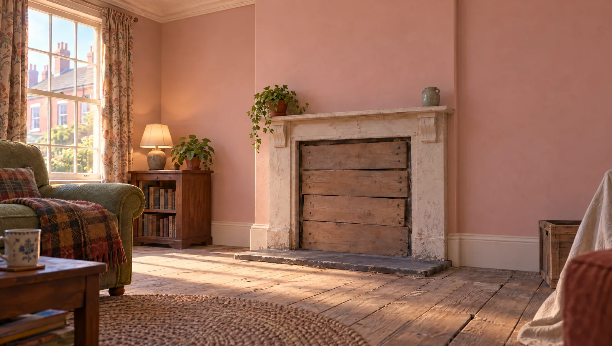

Plastering in Hengoed, sorted.
Flat, smooth walls ready for paint, with the mess taken away.
Hi! I'm Morgan, and I look after homes around Hengoed.


BeforeThis wall needs some love. Tap to see it done.
Tap a job and I'll tell you about it.
Each one has its own page with what's included, guide prices and the questions people ask.

Pick any job above. I'll give you the short version and a guide price.
Build your price with me.
Three quick steps. It's a guide range, the free survey turns it into a fixed written quote.
1 · Pick the finish
2 · How much?
3 · Anything else?
Walls and ceiling in the same room done on one visit: 5% off the extras when you add two or more.
Pick an option and I'll add it up as you go.
Includes our minimum charge for a job this size.
Guide price, confirmed after a free survey. Includes prep, beads where needed and the finish coat. Wall condition and access can move it.
Text me this priceFrom hello to handover.
No hard sell. You already have a guide price, the survey fixes it in writing.

- Survey and quote
We tap-test the walls, check for damp and movement, and send a written quote with prep, plastering and waste itemised.
- Protect the room
Floors are sheeted, doorways sealed, sockets loosened and furniture covered or moved out.
- Prepare
Hollow areas are cut out, surfaces bonded or primed, beads fitted and cracks taped.
- Plaster
Backing coats, boarding or skim are applied and trowelled to a flat, smooth finish.
- Clean up and aftercare
Waste is removed, the room is cleaned and we explain drying times and the right first coat of paint.
Do you give free quotes?
Yes. We look at the walls and ceilings, check for hollow areas and damp, and send a written quote that breaks down preparation, plastering and waste removal.
How messy is plastering?
Skimming is fairly clean. Hacking off and taking down ceilings is dusty. We sheet floors, seal doorways and bag waste as we go, and clean up at the end of each day.
How do I pay?
For bigger jobs we may ask for a deposit to cover materials, with the rest on completion. Small jobs are paid when finished. You'll get an itemised invoice either way.
Are you insured?
Any plasterer working in your home should carry public liability insurance. Ask us for our insurance details and we'll send them before we start.
How long before I can decorate?
A skim usually needs three to seven days to dry in a warm room, and replastering or render longer. Always start with a mist coat of watered-down matt emulsion.
Do I need to empty the room?
It helps. For skimming we can work around wrapped furniture moved to the middle. For hacking off or ceiling work, the room should be emptied as far as possible.